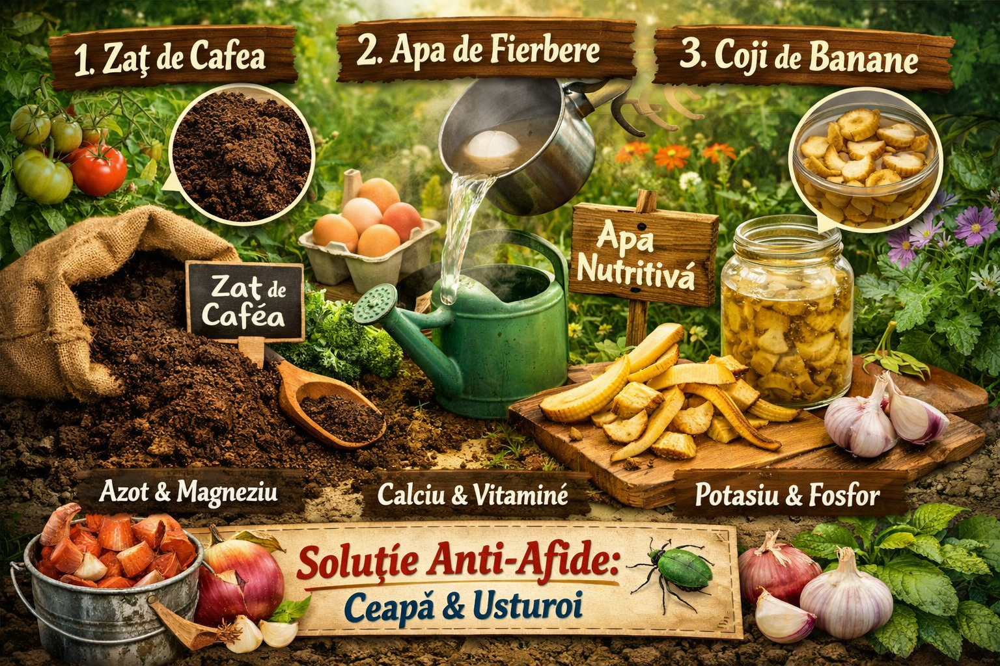
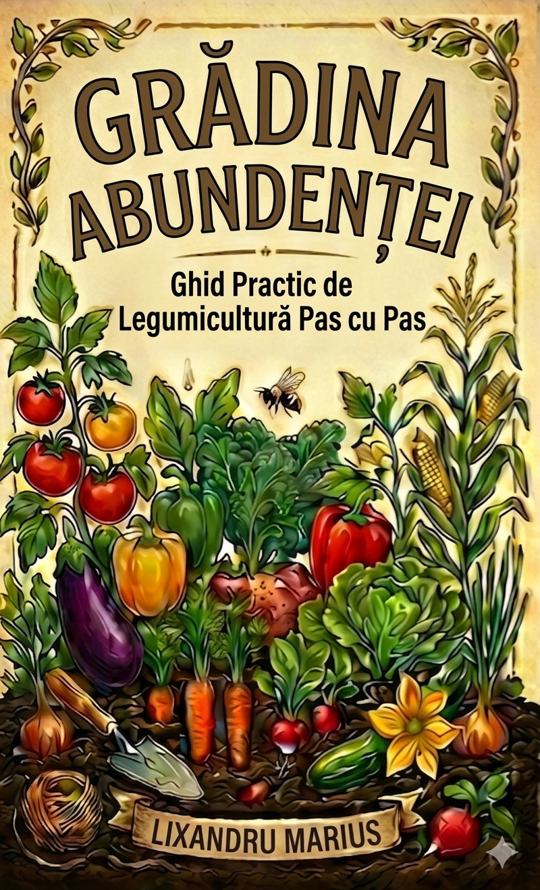
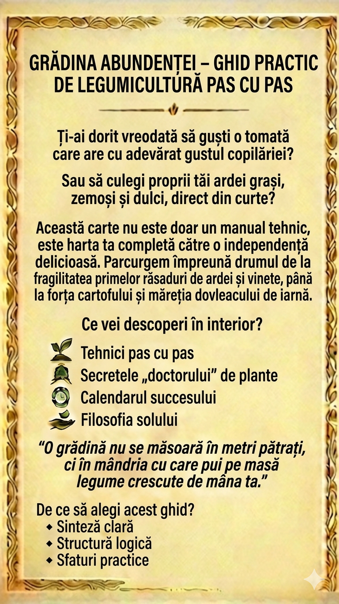

Nu le mai arunca! 3 deșeuri din bucătărie care îți transformă grădina (Ghid Detaliat)
Grădina ta nu are nevoie de chimicale scumpe. Cele mai bune îngrășăminte se află chiar acum în coșul tău de gunoi. Învață cum să le folosești corect, pas cu pas.

1. Zațul de Cafea: Azot pur și Aciditate Controlată
Cafeaua nu ne trezește doar pe noi, ci și pământul. Zațul este o sursă excelentă de azot (N), magneziu (Mg) și potasiu (K), esențiale pentru dezvoltarea frunzelor verzi și viguroase. În plus, are o aciditate ușoară care poate beneficia anumite culturi.
🛠️ Cum îl folosești corect:
Aplicare Directă: Împrăștie un strat subțire (max. 1cm) de zaț de cafea uscat direct la baza plantelor "acidofile" (roșii, afine, rododendroni). Nu exagera, o cantitate prea mare poate sufoca rădăcinile sau poate crește prea mult aciditatea.
Compostare Rapidă: Mixează zațul proaspăt cu paie sau iarbă tăiată. Acționează ca un accelerator puternic de compostare, transformând resturile în pământ fertil mult mai repede.
2. Apa de la Fierberea Ouălor sau Legumelor: Cocktailul de Multivitamine Gratuit
Când fierbi ouă, calciul se transferă în apă. Când fierbi legume (cum ar fi spanacul, brocoli sau cartofii), vitaminele și mineralele se dizolvă acolo. Apa de fierbere devine o soluție nutritivă, o "apa de aur" pe care nu trebuie să o irosești.
🛠️ Cum o folosești corect:
Răcire Completă: Cel mai important pas: Lasă apa să se răcească complet la temperatura camerei. Udarea cu apă fierbinte va șoca și poate ucide plantele.
Udare la Bază: Udă florile din ghiveci, răsadurile tinere sau plantele din solar cu această apă nutritivă. Plantele absorb rapid nutrienții.
3. Cojile de Banană: Bomba cu Potasiu și Fosfor
Vrei ardei dulci, mulți și o recoltă timpurie? Taie cojile de banană mărunt. Acestea sunt o sursă concentrată de potasiu (K), magneziu (Mg) și fosfor (P), esențiale pentru dezvoltarea fructelor, a florilor și a sistemului radicular.
🛠️ Cum le folosești corect:
Substrat Subteran: Atunci când plantezi răsadurile, îngroapă cojile tăiate mărunt la câțiva centimetri sub pământ, în zona unde se vor dezvolta rădăcinile. Pe măsură ce se descompun (și o fac rapid), hrănesc planta exact când are mai mare nevoie de potasiu pentru a forma fructe mari.
"Ceai" de Banană: Pune cojile în apă timp de 24-48h. Soluția rezultată, bogată în potasiu, este excelentă pentru udarea roșiilor și a ardeilor în perioada de înflorire.
💡 Secretul Grădinarului - Soluția Anti-Afide (Păduchi):
Pune cojile de ceapă sau usturoi într-o găleată cu apă timp de 24h. Această soluție are un miros puternic care alungă afidele (păduchii plantelor) fără a afecta insectele benefice sau pământul. Este un repelent bio eficient și gratuit!
8 Aprilie 2026SPECIAL: LANSARE CARTE
Grădina Abundenței – Ghid Practic de Legumicultură Pas cu Pas
Astăzi începem o călătorie specială. Am decis să împărtășesc cu voi, capitol cu capitol, rodul anilor de experiență sub formă de carte. Bine ați venit în „Grădina Abundenței”!


Cuvânt Înainte: De ce această carte?
Grădinăritul nu este doar despre a pune o sămânță în pământ; este un act de independență, o formă de terapie și o promisiune făcută viitorului. Am scris „Grădina Abundenței” pentru a demonta mitul conform căruia ai nevoie de studii de specialitate sau de un teren imens pentru a pune pe masă legume cu gust adevărat.
"O grădină nu se măsoară în metri pătrați, ci în dragostea și atenția pe care o oferi fiecărui fir de verdeață."
Ce vom învăța împreună în paginile următoare?
În săptămânile ce urmează, voi posta aici segmente din capitolele esențiale ale ghidului
Nota Autorului: Fiecare postare va conține tehnici aplicabile imediat, adaptate condițiilor noastre climatice din 2026. Vă invit să puneți întrebări în secțiunea de contact pentru fiecare capitol parcurs.
Vă mulțumesc că sunteți parte din această comunitate. Să transformăm împreună fiecare bucată de pământ într-un mic colț de rai!
Urmează: Introducere
INTRODUCERE: Chemarea Pământului
Există ceva aproape magic în momentul în care prima frunzuliță verde străpunge crusta neagră a solului. În acea secundă, nu ești doar un simplu spectator, ci devii un creator. Legumicultura nu este doar despre calorii sau despre economie; este despre redescoperirea unui ritm pe care lumea modernă l-a uitat: ritmul naturii.
De ce să cultivi propriile legume?
Într-o epocă a vitezei, în care legumele din supermarket sunt alese pentru rezistența lor la transport, nu pentru gust, a avea propria grădină este un act de independență.
🍅 Gustul adevărat: Nicio roșie din comerț nu se va compara vreodată cu una care s-a copt sub soarele de iulie, culeasă și mâncată imediat, încă caldă.
🛡️ Sănătate fără compromisuri: Tu ești cel care decide ce intră în farfuria familiei tale. Fără pesticide sistemice, fără fertilizanți chimici în exces. Doar hrană vie.
🧘 Terapie prin muncă: Grădina este locul unde zgomotul notificărilor de pe telefon este înlocuit de foșnetul frunzelor. Este cel mai bun antidot împotriva stresului.
🌳 Conexiunea cu viitorul: Învățându-i pe copii sau nepoți cum crește un morcov, le oferi o lecție de viață despre respectul față de mediul înconjurător.
Îndemnul meu: Începe astăzi!
Poate ai un teren generos la țară, o mică curte la marginea orașului sau doar un balcon orientat spre soare. Nu lăsa lipsa spațiului sau a experienței să te oprească. Fiecare mare grădinar a început cu o plantă moartă din cauza udării excesive sau cu o recoltă mâncată de melci. Acestea nu sunt eșecuri, ci „taxe de școlarizare”. Pământul este generos și iartă multe; el are nevoie doar de intenția ta și de puțină atenție.
"Cea mai bună zi pentru a planta un copac a fost acum 20 de ani. A doua cea mai bună zi este astăzi." — Proverb vechi
Această carte nu este doar un manual tehnic. Este partenerul tău de drum. Vom învăța împreună cum să pregătim patul germinativ, cum să ascultăm nevoile plantelor și cum să ne bucurăm de o recoltă care nu doar satură, ci și vindecă sufletul.
Să pornim, deci, la drum. Ia-ți uneltele, pune-ți pălăria de soare și hai să transformăm o bucată de pământ într-un paradis al aromelor!
Ce urmează: Fundamentele
Înainte de a pune prima sămânță în pământ, trebuie să înțelegem „scena” pe care se va desfășura spectacolul creșterii: Locul, Lumina și Solul. Aceasta este fundația pe care vei construi tot restul cărții. Dacă alegi bine locul și înțelegi pământul, munca ta va fi de zece ori mai ușoară. În legumicultură, prevenția (prin amplasare corectă) este mai valoroasă decât orice tratament ulterior.
1. Amplasarea: Locul unde începe viața
Grădina nu se pune „unde a mai rămas loc”, ci acolo unde plantele se simt cel mai bine. Trei criterii sunt vitale:
Accesul la apă: Legumele sunt compuse în proporție de peste 80-90% din apă. Grădina trebuie să fie cât mai aproape de o sursă de apă. Caratul găleților pe distanțe mari este principala cauză pentru care mulți grădinari renunță după primul an.
Relieful și drenajul: Evită zonele joase unde băltește apa după ploaie (rădăcinile vor putrezi) sau „pungile de frig”. Un teren ușor înclinat spre sud este ideal.
Protecția împotriva vântului: Vânturile puternice pot rupe plantele înalte și usucă excesiv solul. Un gard viu sau o barieră naturală pot face minuni.
2. Lumina: Motorul fotosintezei
Lumina solară este „combustibilul” legumelor. Fără ea, plantele devin firave, lungi și palide.
Expunerea ideală: Majoritatea legumelor (tomate, ardei, dovlecei) au nevoie de minim 6-8 ore de soare direct pe zi.
Orientarea rândurilor: Pentru o iluminare uniformă, rândurile de plante ar trebui orientate pe direcția Nord-Sud. Astfel, soarele „mătură” grădina de la răsărit la apus.
Zonele cu umbră: Nu le irosi! Locurile cu 3-4 ore de soare sunt perfecte pentru verdețuri (salată, spanac) sau rădăcinose (ridichi).
3. Solul: Cămară și casă pentru rădăcini
Nu cultivăm plante, ci cultivăm solul, iar solul se va ocupa de plante.
Tipuri de sol:Nisipos (se încălzește repede, dar pierde apa), Lutos/Argilos (reține apa, dar se lucrează greu) și Lutos-nisipos (idealul!).
Testul „bilei”: Ia un pumn de pământ umed și strânge-l în mână. Dacă se sfărâmă imediat, e prea nisipos. Dacă e ca plastilina, are prea multă argilă. Dacă rămâne compact dar se crapă la o atingere ușoară, e perfect.
Hrănirea solului: Compostul, gunoiul de grajd bine descompus și mulcirea sunt secretele unui sol viu, plin de râme și microorganisme benefice.
Notă de autor: „Pământul nu este o simplă suprafață pe care stau plantele, ci un organism viu. Dacă îl tratezi cu respect, îți va întoarce favoarea înzecit la recoltă.”
Cei "Șapte Magnifici" (Uneltele esențiale)
Pentru a nu transforma grădinăritul într-o corvoadă, ai nevoie de uneltele potrivite. O unealtă bună te va servi zeci de ani.
Hârlețul (Lopata dreaptă): Unealta forței, pentru întoarcerea pământului sau săparea gropilor. Sfat: Alege unul cu marginea superioară curbată pentru protecția încălțămintei.
Sapa (Regina grădinii): Esențială pentru bătutul bulgărilor, deschiderea șanțurilor și prășit (eliminarea buruienilor).
Grebla: Unealta de finisaj pentru nivelare și spargerea crustei pământului înainte de semănat.
Furca de grădină (Cazmaua cu dinți): Eficientă în soluri argiloase; permite afânarea fără a tăia râmele și fără a distruge microbiologia solului.
Mistria de mână (Lopățica): Pentru precizie la plantarea răsadurilor fără a deranja rădăcinile fine.
Foarfeca de grădină (Secatorul): Pentru copilitul tomatelor, recoltare și curățarea plantelor uscate.
Stropitoarea: Cu "trandafir" (cap cu găurele fine) pentru a distribui apa delicat, imitând ploaia.
Mici accesorii care fac diferența:
Sfoara de trasat (pentru rânduri drepte).
Mănușile de protecție (evitarea bătăturilor).
Roaba (pentru transportul compostului sau al recoltei).
Regula de aur a uneltelor: După fiecare utilizare, curăță-le de pământ și depozitează-le la loc uscat. O unealtă curată nu ruginește și nu transmite boli.
Tehnica „Buzunarului de Aur”: Recoltă de 3 ori mai mare
Majoritatea grădinarilor fac o greșeală fatală la transplantare. Află cum poți tripla producția aplicând metoda stratificată.
1. Pregătirea „Gropii de plantat”
Nu săpa o groapă cât ghiveciul, sapă una de două ori mai mare. Rădăcinile tinere au nevoie de pământ afânat „ca perna” pentru a se extinde rapid.
2. Cocktailul de Nutrienți (Secretul celor 300%)
Înainte de a pune planta, aruncă în groapă: o mână de compost, o lingură de cenușă de lemn și praf de coajă de ou. Mixează-le cu puțin pământ.
3. Unghiul Magic la Roșii
Dacă răsadul este înalt, pune-l culcat la un unghi de 45°, lăsând doar vârful afară. Partea îngropată va scoate mii de rădăcini noi.
4. „Masajul” Rădăcinilor & Regula Primului Litru
Desfă ușor rădăcinile ghemite cu degetele. Toarnă un litru de apă direct în groapă înainte de a pune pământul final pentru a elimina pungile de aer.
⚠️ Atenție: Nu transplanta la amiază! Alege seara sau o zi înnorată.
5. Scutul de Protecție
Protejează planta de soare și vânt în primele 48 de ore. După 3 zile, udă cu „ceai de reanimare”: o linguriță de miere la 5 litri de apă.
2 Martie 2026
Martie în Grădină: Ghidul Complet de la A la Z pentru un Sezon de Succes
Luna martie este pragul dintre iarnă și viață. Este momentul în care deciziile luate acum vor dicta abundența recoltei de la vară. Descoperă tot ce trebuie să faci, de la analiza microscopică a solului până la tăierile chirurgicale ale livezii.
I. Fundația: Pregătirea și Însănătoșirea Solului
Pământul este un organism viu, nu doar un suport pentru plante. În martie, prima prioritate este structura solului. După dezgheț, solul este adesea tasat. Evită să calci pe straturi pentru a nu distruge porozitatea. Dacă solul tău este argilos, adaugă nisip și materie organică (compost) pentru a îmbunătăți drenajul.
Este momentul ideal pentru a testa pH-ul. Majoritatea legumelor preferă un pH între 6.0 și 7.0. Dacă solul este prea acid, poți adăuga amendamente cu calciu. Nu uita de fertilizarea de bază: un strat de 5-10 cm de compost bine descompus va oferi nutrienții necesari fără a "arde" rădăcinile tinere.
II. Semănăturile Timpurii: Cine rezistă la frig?
Nu toate semințele sunt egale. În martie, ne concentrăm pe plantele care iubesc temperaturile scăzute. Mazărea, de exemplu, are nevoie de frig pentru a nu se "mănoasa" prea repede. Semănați-o la o adâncime de 3-4 cm, în rânduri distanțate la 20 cm.
Spanacul și Loboda: Acestea sunt campioanele vitaminelor. Spanacul semănat acum va fi gata de recoltat înainte ca dăunătorii de vară să apară.
Morcovul și Pătrunjelul: Secretul germinării lor este umiditatea constantă. Deoarece semințele sunt minuscule, poți să le amesteci cu puțin nisip fin pentru o distribuție uniformă.
III. Tabelul Semănăturilor (Calendar Practic)
Cultură
Adâncime Semănat
Distanță Rânduri
Zile Germinare
Mazăre
4 cm
20-25 cm
7-14 zile
Ridichi de lună
1-2 cm
10-15 cm
4-6 zile
Morcov
1 cm
20 cm
15-20 zile
IV. Livada și Grădina de Flori
În livadă, bătălia se dă cu bolile fungice care iernează în scoarță. Aplică tratamentele "la albastru" (pe bază de cupru) înainte de desfacerea mugurilor. Acest pas este crucial pentru a preveni Monilia sau Rapanul.
Pentru flori, este timpul să cureți tufele de trandafiri. Taie ramurile care cresc spre interior și scurtează restul ramurilor la 3-4 muguri exteriori. Acest lucru va încuraja o înflorire spectaculoasă în iunie.
V. Managementul Răsadurilor în Interior
Răsadurile de roșii semănate în februarie au nevoie acum de repicat. Când au apărut primele două frunze adevărate, mută-le în ghivece individuale. Acest proces "antrenează" rădăcina să devină mai ramificată și mai puternică. Atenție la "piciorul negru" (o boală a coletului) – asigură-te că nu uzi în exces și că există circulație de aer.
VI. Observarea Naturii: Indicatori Fenologici
Bătrânii grădinari nu se uitau doar la calendar, ci la natură. Când înflorește forsythia (tufa galbenă), e semn că solul s-a încălzit suficient pentru a semăna sfecla roșie. Când apar primele frunze la mesteacăn, poți începe să te gândești la cartofi.
Așa arata o forsythia pentru cine nu știe
Concluzie: Martie nu este o cursă, ci un maraton. Fiecare oră petrecută acum în grădină îți va economisi zece ore de muncă în iulie. Bucură-te de acest nou început!
1 Martie 2026
Primele semne de viață în straturi: Calendarul lunii Martie
Odată cu intrarea în luna martie, grădina trece de la planificare la acțiune în aer liber. Este timpul să profităm de umiditatea solului și să începem semănăturile timpurii.
Martie este luna în care pământul se trezește cu adevărat, iar grădinarul trebuie să fie extrem de vigilent. Deși nopțile mai pot aduce înghețuri ușoare, solul păstrează umiditatea prețioasă din zăpezile topite, o condiție ideală pentru așa-numitele culturi „de frig”. Înainte de a scoate uneltele, verificați starea solului: dacă pământul se lipește de cizmă ca lutul, înseamnă că este încă prea ud și trebuie să mai așteptați. Lucrarea unui pământ prea umed distruge structura acestuia, formând bulgări tari care se vor usca precum piatra în timpul verii.
Primele plante care pot fi semănate direct în grădină sunt mazărea, ceapa, usturoiul, morcovul, pătrunjelul și spanacul. Mazărea este vedeta incontestabilă a acestei luni; semințele ei germinează la doar câteva grade peste zero și nu se tem de brumă. Mai mult, mazărea are proprietatea fantastică de a fixa azotul în sol prin nodozitățile de pe rădăcini, pregătind terenul pentru culturile mai pretențioase, precum roșiile, care vor veni în luna mai. Ceapa și usturoiul se plantează acum sub formă de arpagic sau căței, asigurându-vă o recoltă timpurie de verdețuri esențiale.
Tot acum este momentul ideal pentru a semăna ridichile de lună și salata verde. Acestea au un ciclu scurt de vegetație și vă vor oferi primele satisfacții culinare în doar câteva săptămâni de la răsărire. Nu uitați să curățați straturile de eventualele resturi vegetale rămase de anul trecut și să încorporați un strat subțire de compost matur acolo unde solul pare epuizat. Deși munca în luna martie este adesea grea, desfășurându-se în condiții de noroi sau vânt tăios, satisfacția de a vedea primele rânduri verzi aliniate perfect în grădină este bucuria supremă a oricărui om care iubește pământul.
28 Februarie 2026
Magia răsadurilor: Cum obținem plante viguroase din sămânță
Februarie este luna în care transformăm interiorul casei într-o mică seră. Succesul recoltei de vară depinde direct de atenția pe care o acordăm acum tinerelor plăntuțe.
Succesul unei recolte de roșii gustoase sau de ardei cărnoși depinde enorm de vigurozitatea răsadului produs în interior. Totul începe cu alegerea unui substrat de calitate superioară. Pământul obișnuit din grădină este adesea prea dens pentru rădăcinile fine și poate conține microorganisme ce provoacă „căderea plăntuțelor”. Este recomandat să folosiți un amestec special pe bază de turbă fină, care să rețină umezeala, dar care să permită în același timp drenajul și oxigenarea rădăcinilor.
Semănatul necesită o mână ușoară și multă răbdare. Regulă de aur: semințele nu se îngroapă niciodată mai adânc de două ori dimensiunea lor. Odată semănate, tăvițele au nevoie de o temperatură constantă de peste 20 de grade pentru a germina. Marea provocare apare imediat după ce plantele „scot capul”: lumina. Dacă răsadurile încep să se lungească excesiv, devenind subțiri și palide, este un semn clar că nu primesc suficientă lumină. Pentru a preveni etiolarea, rotiți tăvițele zilnic cu 180 de grade și așezați-le în cel mai luminos loc din casă, preferabil pe un pervaz orientat spre sud.
Udarea trebuie făcută cu o finețe extremă. Un jet prea puternic de apă poate scoate semințele din sol sau poate culca la pământ tulpinițele fragile. Folosiți întotdeauna un pulverizator fin și apă la temperatura camerei, lăsată la decantat cel puțin 24 de ore. Apa rece ca gheața, direct de la robinet, provoacă un șoc termic sever care poate bloca creșterea plantei pentru zile întregi. Îngrijirea răsadurilor este un ritual zilnic de observare și disciplină, o lecție de speranță care ne reconectează cu ritmul naturii chiar înainte ca iarna să plece definitiv.
27 Februarie 2026
Arta tăierilor de primăvară: Secretul unei livezi roditoare
Finalul iernii marchează momentul critic pentru tăierile pomilor fructiferi. Află cum să intervii corect pentru a asigura sănătatea și longevitatea livezii tale.
Tăierea pomilor fructiferi nu este doar o activitate estetică, ci o necesitate biologică. Fără această intervenție, un pom își va risipi resursele prețioase pentru a menține ramuri bătrâne, umbrite sau epuizate, rezultatul fiind o recoltă de fructe mici și o sensibilitate crescută la boli. Primul pas este curățarea sanitară: trebuie să eliminăm fără ezitare ramurile moarte, cele care prezintă răni deschise sau pete suspecte (semne de cancer bacterian sau ciuperci), precum și cele rupte de vânt sau zăpadă. Orice ramură bolnavă lăsată în coroană este o sursă de infecție pentru restul pomului.
Al doilea obiectiv este aerisirea și iluminarea coroanei. O ramură care crește spre interiorul coroanei va umbri alte ramuri și va împiedica circulația aerului, creând un mediu umed favorabil dăunătorilor. De asemenea, lăstarii verticali foarte viguroși, cunoscuți sub numele de „lăcomari”, trebuie tăiați deoarece aceștia nu vor produce niciodată fructe, ci doar vor „fura” seva de la ramurile roditoare. O coroană corect tăiată ar trebui să aibă o structură aerisită, permițând razelor soarelui să ajungă până la baza ramurilor principale.
Calitatea uneltelor dictează viteza de vindecare a pomului. Folosiți doar foarfeci și ferăstraie profesionale, foarte bine ascuțite, pentru a obține tăieturi netede. O tăietură zdrobită este o rană deschisă care se vindecă greu și atrage paraziții. Un detaliu adesea omis, dar vital, este dezinfectarea lamei cu alcool la trecerea de la un pom la altul. Pentru tăieturile mai mari de 2-3 centimetri în diametru, aplicați un mastic cicatrizant sau o vopsea pe bază de ulei vegetal pentru a sigila „poarta” împotriva umezelii. Această muncă metodică este, în esență, un dialog cu natura, prin care asigurăm viitorul livezii noastre.